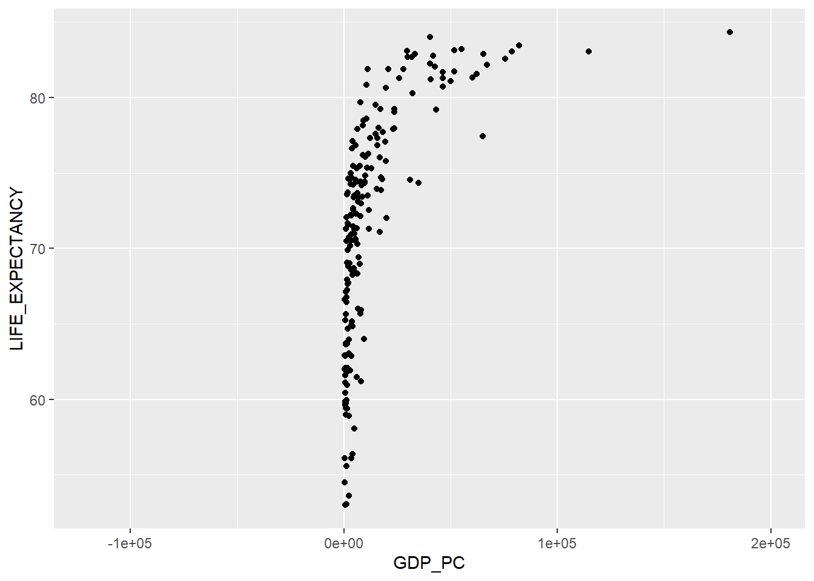
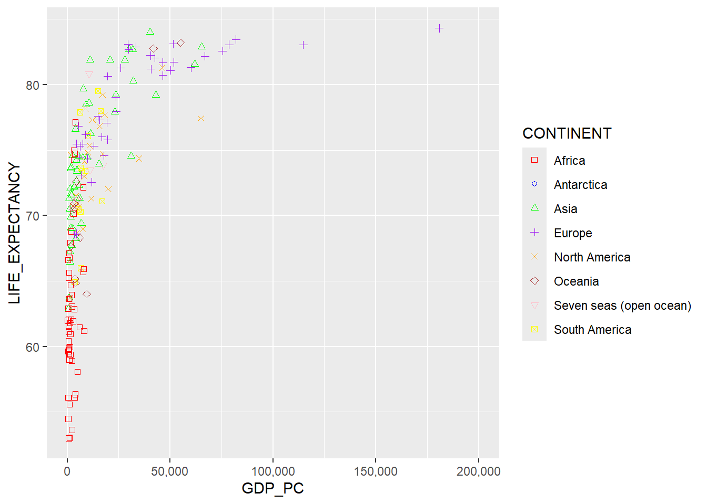
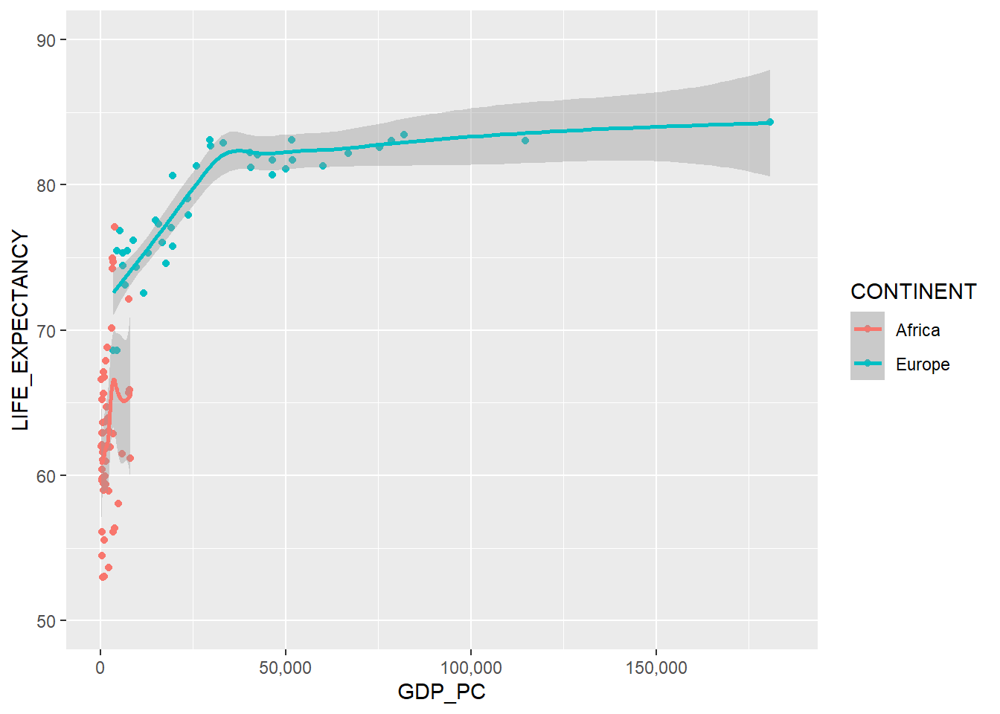
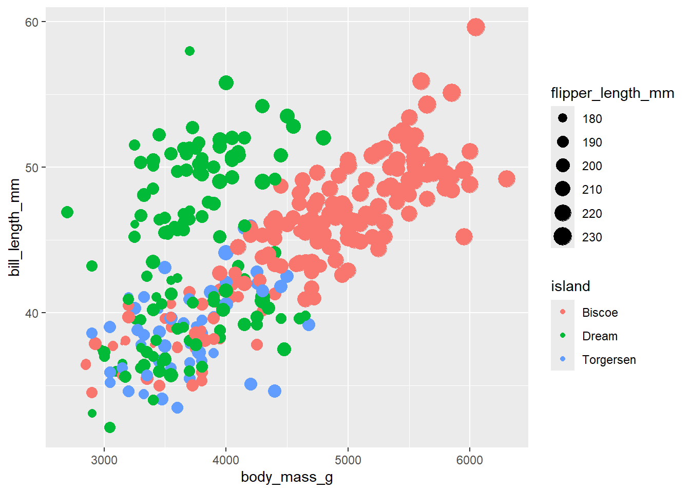
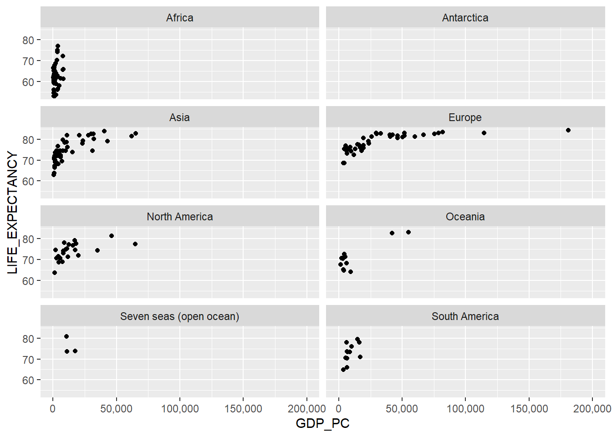

library(tidyverse)
library(plotly)
library(DT)
library (scales)
library (palmerpenguins)Graficación ggplot2 y plotly
Cargar de biblioteca
Tabla de paises
# Carga de los datos de países
paises <-
read_csv(
"https://raw.githubusercontent.com/pf0953-programacionr/2024-ii/refs/heads/main/datos/natural-earth/paises-join-esperanzavida.csv"
)Rows: 201 Columns: 12
── Column specification ────────────────────────────────────────────────────────
Delimiter: ","
chr (8): ADM0_ISO, NAME, CONTINENT, REGION_UN, SUBREGION, REGION_WB, ECONOMY...
dbl (4): POP_EST, GDP_MD, LIFE_EXPECTANCY, GDP_PC
ℹ Use `spec()` to retrieve the full column specification for this data.
ℹ Specify the column types or set `show_col_types = FALSE` to quiet this message.Mostrar la tabla de paises por región
# Tabla de datos de paises
paises |>
filter(SUBREGION == "Eastern Europe")|>
arrange(NAME) |>
datatable(
options = list(
pageLength = 5,
language = list(url = '//cdn.datatables.net/plug-ins/1.10.11/i18n/Spanish.json')
)
)Ordenar los paises por población
# Tabla de datos de paises
paises |>
filter(SUBREGION == "Eastern Europe" & POP_EST >= 10000000)|>
arrange(desc(POP_EST)) |>
datatable(
options = list(
pageLength = 10,
language = list(url = '//cdn.datatables.net/plug-ins/1.10.11/i18n/Spanish.json')
)
)Indicar nombre de código de paíse, paíse y población
# Tabla de datos de paises
paises |>
filter(SUBREGION == "Eastern Europe" & POP_EST >= 10000000)|>
select(ADM0_ISO, NAME, POP_EST) |>
arrange(desc(POP_EST)) |>
datatable(
options = list(
pageLength = 10,
language = list(url = '//cdn.datatables.net/plug-ins/1.10.11/i18n/Spanish.json')
)
)##Gráficos con ggplot2
Gráficos de dispersión de PIB per cápita vs esperarnaza de vida al nacer
# Gráfico de dispersión de PIB per cápita vs esperanza de vida al nacer
ggplot(data = paises) +
geom_point(mapping = aes(x = GDP_PC, y = LIFE_EXPECTANCY))
Se cambia de color el gráfico
# Gráfico de dispersión de PIB per cápita vs esperanza de vida al nacer
# coloreado por continente
#| label: ggplot2.2
#| warning: false
#| message: false
paises |>
ggplot(aes(x = GDP_PC, y = LIFE_EXPECTANCY, color = INCOME_GRP)) +
geom_point() +
scale_x_continuous(labels = comma, limits = c(0, NA))Warning: Removed 11 rows containing missing values or values outside the scale range
(`geom_point()`).
Cálculo del percápita
paises |>
select(NAME, GDP_PC, LIFE_EXPECTANCY) |>
filter(GDP_PC >= 175000)# A tibble: 3 × 3
NAME GDP_PC LIFE_EXPECTANCY
<chr> <dbl> <dbl>
1 Liechtenstein 180857. 84.3
2 Monaco 184478. NA
3 Antarctica 200000 NA Cambiando la figura del gráfico
# Gráfico de dispersión de PIB per cápita vs esperanza de vida al nacer
# con formas de puntos correspondientes al continente
paises |>
ggplot(aes(x = GDP_PC, y = LIFE_EXPECTANCY, shape = CONTINENT)) +
geom_point() +
scale_x_continuous(labels = comma, limits = c(0, NA))Warning: The shape palette can deal with a maximum of 6 discrete values because more
than 6 becomes difficult to discriminate
ℹ you have requested 8 values. Consider specifying shapes manually if you need
that many have them.Warning: Removed 26 rows containing missing values or values outside the scale range
(`geom_point()`).
Cambios en los labels
# Gráfico de dispersión de PIB per cápita vs esperanza de vida al nacer
# con formas y colores correspondientes al continente
paises |>
ggplot(aes(x = GDP_PC, y = LIFE_EXPECTANCY, shape = CONTINENT, color = CONTINENT)) +
geom_point() +
scale_x_continuous(labels = comma, limits = c(0, NA)) +
scale_shape_manual(values = c(0, 1, 2, 3, 4, 5, 6, 7)) +
scale_color_manual(values = c("red", "blue", "green", "purple", "orange", "brown", "pink", "yellow"))
Cambiando el tamaño
# Gráfico de dispersión de PIB per cápita vs esperanza de vida al nacer
# con tamaño de puntos correspondiente a la población
paises |>
ggplot(aes(x = GDP_PC, y = LIFE_EXPECTANCY, size = POP_EST, color = CONTINENT)) +
geom_point() +
scale_size_continuous(labels = comma) +
scale_x_continuous(labels = comma, limits = c(0, NA))
Agregando capas adicionales al gráfico.
# Gráfico de dispersión de PIB per cápita vs esperanza de vida al nacer
# + curva de tendencia
paises |>
ggplot(aes(x = GDP_PC, y = LIFE_EXPECTANCY)) +
geom_point() +
geom_smooth(method = 'loess', se= TRUE) +
scale_x_continuous(labels = comma, limits = c(0, NA))
Cambiando la variable adicional y el color
# Gráfico de dispersión de PIB per cápita vs esperanza de vida al nacer
# en África y Europa coloreado por continente
# + curva de tendencia
paises |>
filter(CONTINENT == 'Africa' | CONTINENT == 'Europe') |>
ggplot(aes(x = GDP_PC, y = LIFE_EXPECTANCY, color = CONTINENT)) +
geom_point() +
geom_smooth() +
scale_x_continuous(labels = comma, limits = c(0, NA)) +
scale_y_continuous(labels = comma, limits = c(50, 90))
Usando la base de palmerpenguis, mostrando en el color la isla y el tamaño del ala.
penguins |>
ggplot(aes(x=body_mass_g, y=bill_length_mm, color= island, size= flipper_length_mm)) +
geom_point()
Gráficos paneles o facet
# Gráfico de dispersión de PIB per cápita vs esperanza de vida al nacer
# + paneles por continente
paises |>
ggplot(aes(x = GDP_PC, y = LIFE_EXPECTANCY)) +
geom_point() +
facet_wrap(~ CONTINENT, nrow = 6) +
scale_x_continuous(labels = comma, limits = c(0, NA))